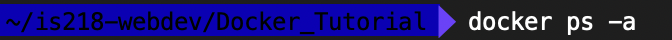

Setup Apache Web Server on Docker
- Install Docker on your computer
- With Docker running, enter the command: 'docker pull ubuntu' in the Command Prompt/Command Line Interface.
- Update the application packages by using the command: 'apt-get update', then 'apt-get install apache2', then enter another command: 'docker commit'.
- You'll have to share a directory between your host machine and Docker. Enter the command: 'docker run -it -v ~/an_absolute_local_directory:/a_diretory_in_Docker_container container_name/bin/bash'

; the '-v'(volume) command mounts the directory from the host into the specified directory of the container. **DISCLAIMER** Replace the directory names with legitimate directory names.** - Run the command: 'docker ps -a' to see a list of available Docker images and their hashes.
 - From the list of images, you'll see a hash next to the image you just made with Apache2, run the command: 'docker commit
ubuntu-my_apache2 ', this will rename the hash from jibberish to a name which you'll easily recognize. **Please input the hash between the < & > signs.**
- Run your Apache webserver via Docker with the following command: 'docker run -it -p 127.0.0.1:80:80 -v ~/folderName/local_dir:/var/www/html ubuntu-my_apache2 /bin/bash
- vi text editor is included with Ubuntu and most Linux distros so once you've initialized your Docker image, change directories to '/var/www/html', via: 'cd /var/www/html'
- Once you arrive in the /var/www/html/ directory, run the command: 'vi index.html', Once vi opens, copy the following HTML into your own index.html
- When you are finished with your index.html file, press the Escape key, then enter the following: ':wq', then press Enter. This will write your changes to the file, quit vi, and then bring you back to /var/www/html.
- At the command line, enter the following command: '/etc/init.d/apache2 restart' ; This will restart your Apache server. You ought to see something very similar to this:
- Open a web browser of your choice then enter "127.0.0.1" in the URL/Address textbox. You've just wrote your first web app! Congratulations!